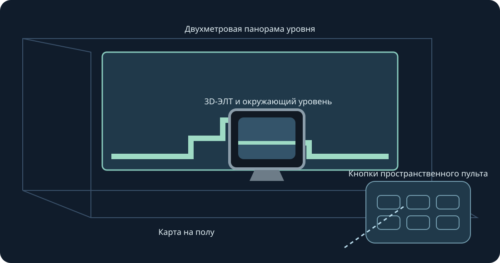

Стены, пол, аркадный стол, ЭЛТ и изогнутая галерея. Экспериментальная XR-версия. Изменяйте размер обеими рукоятками.
Экспериментальная версия. Проверяются сборка, lint, геометрия и ввод. Для этой версии шлем не подключался, установка и физическое тестирование не проводились. Отслеживание, комфорт, сквозной режим и плавность требуют проверки на устройстве.
Для последующего теста включите режим разработчика и установите публичный ARM64 APK через SideQuest или adb install -r. Откройте Mario Compilation Ultra XR в неизвестных источниках, выберите картридж или ZIP системным диалогом и начните игру. All-Stars + World и Yoshi’s Island импортируются отдельно. Публичный APK не содержит ROM и сохранений.
Выберите уровень, исходный CRT, пульт или настройки. Один захват перемещает и вращает, два меняют размер уровня даже при фиксации позиции. Есть точная настройка, половина/двойной размер/сброс. Возврат приближает интерфейс. Y открывает настройки; игровая страница содержит все кнопки SNES.
Щипком двигайте стик, другой рукой нажимайте кнопки. Щипок средним пальцем захватывает ручки. Потеря отслеживания отпускает ввод.
Новая установка запрашивает 90 Гц и прозрачную AR-панораму высотой два метра. При необходимости выбирается доступная частота; темп игры остаётся исходным. Для автоматических стен необязательны скан комнаты и разрешения сцен/якорей. Есть ручное размещение и калибровка пола. Сквозное изображение предоставляет среда; нет разрешений Интернета, микрофона или кадров камеры.
Силуэты служат подсказками и не симулируют далёкие объекты. Проверенные позиции доступны сразу; изученные изображения берутся только из локальной игры.
Аркадный стол показывает загруженную область. Физика и активация объектов остаются исходными.
Быстрые команды ПК: удерживайте нажатие правого стика; крестовина влево/вправо — масштаб, вверх — 1:1, вниз — вся карта, A — фиксация, B — исходная камера, X — снимок, Y — следить за игроком. Отпускание возвращает SNES-ввод. F1 или справка Y в меню открывает иллюстрацию.
SNES: D-pad · A · B · X · Y · L · R · Start · Select
Touch: A → SNES B · B → SNES Y · X → SNES A · RT → SNES X · R3 → Start · LT → Rewind · Y → Переместить настройки
Parity · Validation